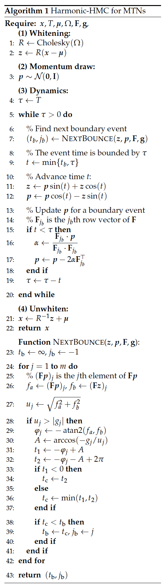
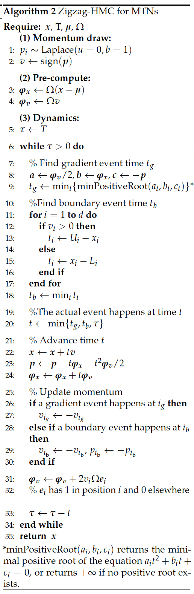
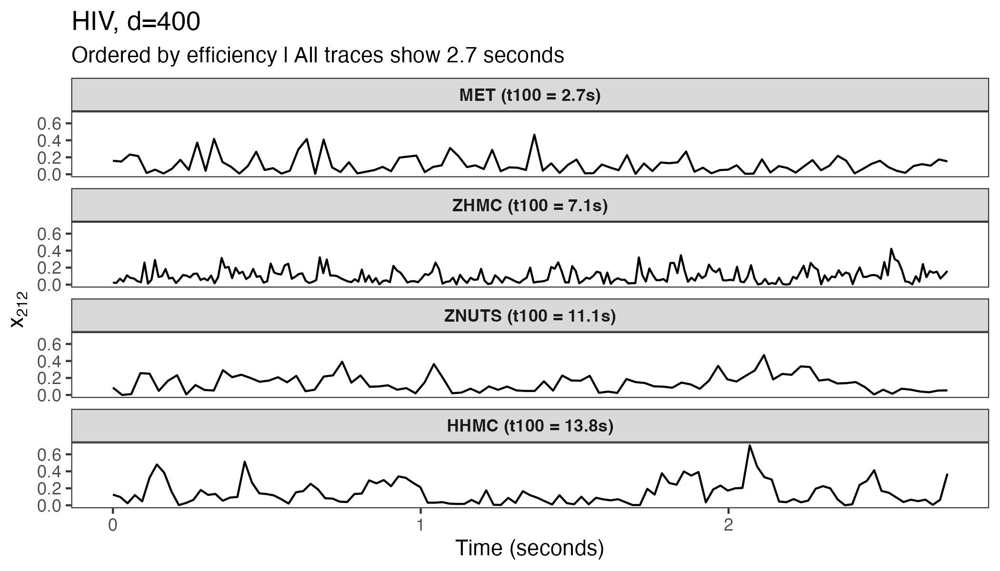
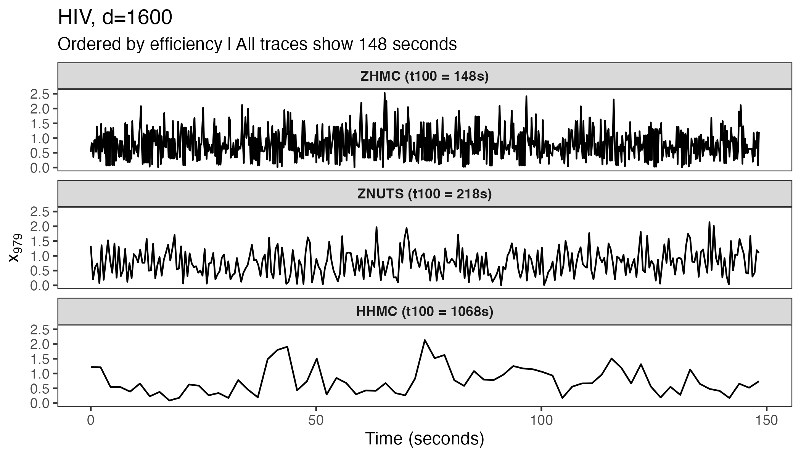
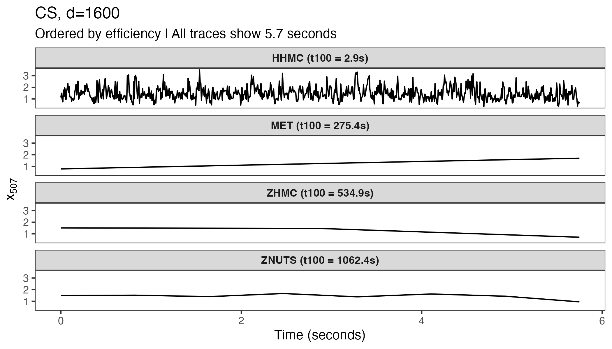
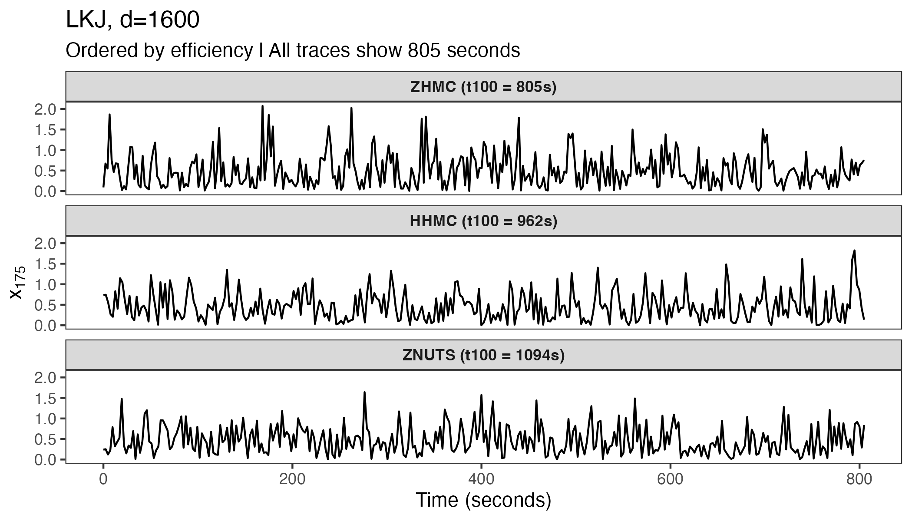

Simulating from the multivariate truncated normal distribution (MTN) is required in various statistical applications yet remains challenging in high dimensions. Currently available algorithms and their implementations often fail when the number of parameters exceeds a few hundred. To provide a general computational tool to efficiently sample from high-dimensional MTNs, we introduce the hdtg package that implements two state-of-the-art simulation algorithms: harmonic Hamiltonian Monte Carlo (Harmonic-HMC) and zigzag Hamiltonian Monte Carlo (Zigzag-HMC). Both algorithms exploit analytical solutions of the Hamiltonian dynamics under a quadratic potential energy with hard boundary constraints, leading to rejection-free methods. We compare their efficiencies against another state-of-the-art algorithm for MTN simulation, the minimax tilting accept-reject sampler (MET). The run-time of these three approaches heavily depends on the underlying multivariate normal correlation structure. Zigzag-HMC and Harmonic-HMC both achieve 100 effective samples within 3,600 seconds across all tests with dimension ranging from 100 to 1,600, while MET has difficulty in several high-dimensional examples. We provide guidance on how to choose an appropriate method for a given situation and illustrate the usage of hdtg.
Sampling from a multivariate truncated normal (MTN) distribution is a recurring problem in many statistical applications. The MTN distribution of a \(d\)-dimensional random vector \(\boldsymbol{\mathbf{x}} \in \mathbb{R}^{d}\) has the form \[\begin{equation} \boldsymbol{\mathbf{x}} \sim {\cal N}\left( \boldsymbol{\mathbf{\mu}}, \Sigma\right) \text{ with } \left(\mathbf{F}\boldsymbol{\mathbf{x}}+ \mathbf{g}\right)_i \geq 0 \text{ for } i = 1, \dots, m, \end{equation}\] where \(\boldsymbol{\mathbf{\mu}}\) and \(\Sigma\) are the mean vector and covariance matrix, the \(m\times d\) matrix \(\mathbf{F}\) and \(m\)-dimensional vector \(\mathbf{g}\) specify the \(m\) linear constraints and \(\left(\cdot\right)_i\) denotes the \(i\)th vector element (Pakman and Paninski 2014). MTNs arise in various contexts including probit and tobit models (Albert and Chib 1993; Tobin 1958), latent Gaussian models (Bolin and Lindgren 2015), copula regression (Pitt et al. 2006), spatial models (Tsionas and Michaelides 2016; Baltagi et al. 2018; Zareifard and Khaledi 2021), Bayesian metabolic flux analysis (Heinonen et al. 2019), and many others. When the dimension \(d\) is small, a standard rejection sampler (Geweke 1991; Kotecha and Djuric 1999) works well and is a common choice. However, simulation from a larger MTN with hundreds or thousands of correlated dimensions remains a computational challenge. Work towards this goal includes harmonic Hamiltonian Monte Carlo (Pakman and Paninski 2014, Harmonic-HMC), rejection sampling based on minimax (saddle point) exponential tilting (Botev 2017, MET), and the most recent Zigzag Hamiltonian Monte Carlo (Nishimura et al. 2020; Nishimura et al. 2025, Zigzag-HMC) methods.
The MET method provides independent samples but can suffer from low acceptance rates and becomes impractical with \(d> 100\), except in special cases like when the MTN has a strongly positive correlation structure (Botev 2017). Both Harmonic-HMC and Zigzag-HMC are Markov chain Monte Carlo (MCMC) approaches that generate correlated samples, but can nonetheless be highly efficient and scale to thousands or more dimensions. To our knowledge, however, there is no general-purpose implementation of either method; the tmg package provided by Pakman and Paninski (2014) is no longer available on CRAN, and Zhang et al. (2023) implement Zigzag-HMC for their phylogenetics applications in the specialized software BEAST (Suchard et al. 2018). Therefore, we have developed the hdtg R package for efficient MTN simulation. The package implements tuning-free Zigzag-HMC and Harmonic-HMC. We provide performance comparisons among these two methods and a MET implementation from the TruncatedNormal package (Botev and Belzile 2021). In most of the test cases with \(d> 100\), Harmonic-HMC and Zigzag-HMC outperform MET. We then conclude with some empirical guidance on which method to use in different scenarios.
We begin by briefly introducing Harmonic-HMC and Zigzag-HMC, both of which are variants of HMC, an effective proposal generation mechanism exploiting the properties of Hamiltonian dynamics (Neal 2011). Harmonic-HMC and Zigzag-HMC follow the same general framework. To sample \(\boldsymbol{\mathbf{x}}= \left(x_1, \dots, x_d\right) \in \mathbb{R}^{d}\) from the target distribution \(\pi_X\left(\boldsymbol{\mathbf{x}}\right)\), the HMC variants introduce an auxiliary momentum variable \(\boldsymbol{\mathbf{p}}\) and define an augmented target distribution \(\pi(\boldsymbol{\mathbf{x}}, \boldsymbol{\mathbf{p}}) = \pi_X\left(\boldsymbol{\mathbf{x}}\right) \pi_P\left(\boldsymbol{\mathbf{p}}\right)\) in the joint space. They then propose the next state by first re-sampling the momentum variable from its marginal and then simulating the solution of Hamiltonian dynamics governed by the differential equations \[\begin{equation} \label{eq:hamilton} \frac{\, {\rm d}\boldsymbol{\mathbf{x}}}{\, {\rm d}t} = \nabla K(\boldsymbol{\mathbf{p}}), \quad \frac{\, {\rm d}\boldsymbol{\mathbf{p}}}{\, {\rm d}t} = - \nabla U(\boldsymbol{\mathbf{x}}), \end{equation} \tag{1}\] where \(U(\boldsymbol{\mathbf{x}})=- \log \pi_X\left(\boldsymbol{\mathbf{x}}\right)\) and \(K(\boldsymbol{\mathbf{p}}) = - \log \pi_P\left(\boldsymbol{\mathbf{p}}\right)\) are referred to as potential and kinetic energies. The dynamics are simulated for a pre-set time duration \(T\) and the end state constitutes a valid Metropolis proposal to be accepted or rejected according to the standard formula (Metropolis et al. 1953; Hastings 1970).
The most common versions of HMC use the momentum distribution \(\pi_P\left(\boldsymbol{\mathbf{p}}\right) \sim \mathcal{N}(\boldsymbol{\mathbf{0}}, \mathbf{I})\) and rely on the leapfrog integrator to numerically solve (1), as its solutions are analytically intractable in general settings. Harmonic-HMC takes advantage of the fact that (1) admits analytical solutions when the target \(\pi_X\left(\boldsymbol{\mathbf{x}}\right)\) is an MTN. The solution follows independent harmonic oscillations along the principal components of the covariance/precision matrix (Pakman and Paninski 2014); we thus refer to the algorithm as Harmonic-HMC. Truncation boundaries are handled via elastic “bounces” against hard potential energy walls (Neal 2011). Algorithm 1 provides pseudo-code for Harmonic-HMC following Pakman and Paninski (2014).
Zigzag-HMC differs from the common HMC versions in that it deploys a Laplace momentum (Nishimura et al. 2020, 2025) \[\begin{equation} \pi_P\left(\boldsymbol{\mathbf{p}}\right) \propto \prod_{i=1}^d\exp\left(-|p_i|\right). \end{equation}\] The Hamiltonian dynamics then become \[\begin{equation} \label{eq:hzz_equation} \frac{{\rm d} \boldsymbol{\mathbf{x}}}{{\rm d} t} = \text{sign}\left(\boldsymbol{\mathbf{p}}\right), \quad \frac{{\rm d} \boldsymbol{\mathbf{p}}}{{\rm d} t} = - \nabla U(\boldsymbol{\mathbf{x}}), \end{equation} \tag{2}\] where \(\text{sign}\left(p_i\right)\) returns 1 if \(p_i\) is positive and -1 otherwise. Because the velocity \(\, {\rm d}\boldsymbol{\mathbf{x}}/ \, {\rm d}t \in \{\pm 1\}^d\) remains constant until one of the \(p_i\) flips its sign, the trajectory of these Hamiltonian dynamics has a zigzag pattern, hence the name Zigzag-HMC. The zigzag dynamics also admit analytical solutions under an MTN target and can handle the truncation in the same manner as in Harmonic-HMC. Algorithm 2 provides pseudo-code for Zigzag-HMC. Our current Zigzag-HMC implementation is limited to the coordinate-wise bounds \(\boldsymbol{\mathbf{l}}\leq \boldsymbol{\mathbf{x}} \leq \boldsymbol{\mathbf{u}}\). We refer interested readers to Nishimura et al. (2025) and Zhang et al. (2023) for more details.
The simulation duration \(T\), i.e. how long Hamiltonian dynamics is simulated for each proposal generation, critically affects efficiencies of both Harmonic and Zigzag-HMC. For Harmonic-HMC, Pakman and Paninski (2014) suggest setting \(T= \pi/2\); when using this fixed \(T\), however, we observe inefficiencies in some of our examples in Section 4 due to Hamiltonian dynamics’ periodic behaviors (Neal 2011). We therefore randomize the duration \(T\), as recommended by Neal (2011), and draw it from a uniform distribution on \(\left[\pi/8,\pi/2\right]\). For Zigzag-HMC, we adopt the choice \(T= \sqrt{2} \lambda_{\text{min}}^{-1/2}\) based on the heuristics of (Nishimura et al. 2025), where \(\lambda_{\text{min}}\) is the minimal eigenvalue of the precision matrix \(\Omega= \Sigma^{-1}\). We compute \(\lambda_{\text{min}}\) using the Lanczos algorithm (Demmel 1997) as in the mgcv package (Wood 2017). We further implement the no-U-turn sampler (NUTS) of Hoffman and Gelman (2014) to automatically determine the integration time. With NUTS, we only need to pick a base integration time \(\Delta T\) which we set to \(0.1 \lambda_{\text{min}}^{-1/2}\) as recommended by Nishimura et al. (2025).


The algorithmic divergence between the two methods stems from their momentum distributions. Harmonic-HMC employs Gaussian momentum, generating harmonic oscillatory dynamics via trigonometric functions. In contrast, Zigzag-HMC uses Laplace momentum, producing piecewise-linear trajectories with constant velocity updates. This distinction leads to differences in event detection: Harmonic-HMC computes boundary bounce times using trigonometric relationships, while Zigzag-HMC solves quadratic equations for gradient events and checks coordinate distances for boundary events (Algorithm 1 and 2 ). These algorithmic differences lead to varying opportunities for implementation optimization, as summarized in Table 1. The piecewise-linear dynamics of Zigzag-HMC, consisting primarily of vector additions and multiplications, map well to single instruction multiple data (SIMD) instructions, which can process multiple values simultaneously within a single CPU core. In contrast, Harmonic-HMC’s trigonometric operations (sin, cos, atan2, arccos) are inherently less SIMD-friendly due to their transcendental nature. While both samplers are implemented in optimized C++ with Eigen for linear algebra, Zigzag-HMC’s algorithmic structure is inherently more amenable to the low-level hardware optimizations (SIMD and aligned memory) that yield performance gains on modern processors. When examining the computational performance benchmarks in Section 4, it is important to recognize that the observed speed differences stem from both algorithmic efficiencies and the hardware-specific optimizations detailed here.
| Optimization | Harmonic-HMC | Zigzag-HMC |
|---|---|---|
| Language | C++ via Rcpp | C++ via Rcpp |
| Linear algebra | Eigen library | Eigen library |
| RNG1 | std::mt19937 |
std::mt19937 |
| SIMD2 | No | Yes (SSE/AVX) |
| Memory optimization | Standard Eigen | Aligned allocation |
| 1RNG: random number generator. 2SIMD: single instruction multiple data. |
In addition to Harmonic-HMC and Zigzag-HMC, the hdtg package also implements the Markovian-zigzag sampler (Bierkens et al. 2019) for MTNs. The Markovian-zigzag belongs to another emerging class of MCMC algorithms that are based on piecewise deterministic Markov processes (PDMP) (Fearnhead et al. 2018). As established by (Nishimura et al. 2025), Markovian-zigzag is a close cousin of the Hamiltonian-based Zigzag-HMC, with the key difference being the amount of retained momentum information during sampling. Markovian-zigzag exhibited lower sampling efficiency compared to Harmonic-HMC and Zigzag-HMC, particularly on targets with correlated parameters (Nishimura et al. 2025). Therefore, we do not include Markovian-zigzag in our performance comparisons of Section 4. The Markovian-zigzag function is nevertheless available in the package for users who wish to experiment with it.
The hdtg package allows users to draw MCMC samples from an MTN. As an example, one may use the following code to generate 1,000 samples from a 10-dimensional MTN with zero mean and an identity covariance matrix truncated to the positive orthant:
# set the random seed
set.seed(1)
# draw MTN samples using Zigzag-HMC
samplesZHMC <- zigzagHMC(nSample = 1000, mean = rep(0, 10), prec = diag(10),
init = rep(0.1, 10), lowerBounds = rep(0, 10),
upperBounds = rep(Inf, 10))
# draw MTN samples using Harmonic-HMC
samplesHHMC <- harmonicHMC(nSample = 1000, mean = rep(0, 10), choleskyFactor = diag(10),
precFlg = TRUE, init = rep(0.1, 10),
constrainDirec = diag(10), constrainBound = rep(0, 10))The arguments are:
nSample: number of samples.
mean: a \(d\)-dimensional mean vector.
prec: the precision matrix.
init: a vector of the initial value that must satisfy all
constraints.
lowerBounds: a \(d\)-dimensional vector specifying the lower bounds.
upperBounds: a \(d\)-dimensional vector specifying the upper bounds.
choleskyFactor: upper triangular matrix \(\mathbf{U}\) from Cholesky
decomposition of precision or covariance matrix into
\(\mathbf{U}^T\mathbf{U}\).
precFlg: whether choleskyFactor is from precision (TRUE) or
covariance matrix (FALSE).
constrainDirec: the \(\mathbf{F}\) matrix.
constrainBound: the \(\mathbf{g}\) vector.
In addition to applications with fixed \(\boldsymbol{\mathbf{\mu}}\) and
\(\Omega\), hierarchical modeling may require sampling these parameters
from their respective conditional distributions, such as the
phylogenetics example (Zhang et al. 2023) where their posterior
distributions are of scientific interest. In such “random
\(\boldsymbol{\mathbf{\mu}}\) or \(\Omega\)” settings, one may call
zigzagHMC or harmonicHMC inside an MCMC loop, with
\(\boldsymbol{\mathbf{\mu}}\) and \(\Omega\) updated at each iteration. For
Zigzag-HMC, a more efficient approach is to reuse the existing C++
engine object which already stores the truncation boundaries and SIMD
configuration and simply pass the updated \(\boldsymbol{\mathbf{\mu}}\)
and \(\Omega\) to the sampler. The example below illustrates the
10-dimensional MTN case with a random mean and precision. Note that the
stationary distribution of this toy example is the joint distribution of
both the MTN parameters (m, prec) and the truncated MTN variable
itself. While the conditional distributions are standard (normal for
m, Wishart for prec, MTN for the variable), their joint distribution
is not a standard named distribution and does not admit a closed-form
expression.
set.seed(1)
n <- 1000
d <- 10
samples <- array(0, c(n, d))
# initialize MTN mean and precision
m <- rnorm(d, 0, 1)
prec <- rWishart(n = 1, df = d, Sigma = diag(d))[,,1]
# call createEngine once
engine <- createEngine(dimension = d, lowerBounds = rep(0, d),
upperBounds = rep(Inf, d), seed = 1, mean = m, precision = prec)
HZZtime <- sqrt(2) / sqrt(min(mgcv::slanczos(A = prec, k = 1,
kl = 1)[['values']]))
currentSample <- rep(0.1, d)
for (i in 1:n) {
m <- rnorm(d, 0, 1)
prec <- rWishart(n = 1, df = d, Sigma = diag(d))[,,1]
setMean(engine = engine, mean = m)
setPrecision(engine = engine, precision = prec)
currentSample <- getZigzagSample(position = currentSample, nutsFlg = F,
engine = engine, stepSize = HZZtime)
samples[i, ] <- currentSample
}To assess the performance of Harmonic-HMC, Zigzag-HMC and MET, we
compare them on MTNs with a variety of correlation structures. The three
examples are: 1) MTNs with its covariance matrix \(\Sigma\) drawn from the
uniform LKJ distribution (Lewandowski et al. 2009) as implemented in the
rlkjcorr function from package
trialr (Brock 2020); 2)
MTNs with a compound symmetric covariance matrix such that
\(\Sigma_{i,i} = 1\) and \(\Sigma_{i,j} = 0.9\) for \(i \neq j\); and 3) a
real-world MTN that arises as a posterior conditional distribution in a
statistical phylogenetics model of HIV evolution (Zhang et al. 2021,
2023). For simplicity, we assume the truncation \(x_i > 0\) for
\(i = 1, \dots, d\) in the first two examples. For the HIV example, the
truncation is determined by the signs of observed binary biological
features.
We now specify our comparison criteria and the rationale behind them. A more efficient MCMC algorithm takes shorter time to achieve a certain effective sample size (ESS). For all three samplers considered, we compare their run-time to obtain the first 1, 100, or 1000 effectively independent samples (\(t_{1}, t_{100}, t_{1000}\)). We include all three metrics because \(t_{100}\) and \(t_{1000}\) reflect a practical run-time for simulation from a fixed MTN and \(t_{1}\) better captures the pre-processing overhead that remains relevant in cases where \(\Sigma\) is random. Recall that the main pre-processing costs are the Cholesky decomposition of \(\Sigma\) or \(\Omega\) (Harmonic-HMC), calculating the minimal precision matrix eigenvalue \(\lambda_{\text{min}}\) (Zigzag-HMC), and solving the minimax optimization problem (MET). Therefore we have \[\begin{equation} \label{eq:time} \begin{split} t_{1}& = t_{0}+ c, \\ t_{100}& = t_{0}+ 100c, \\ \text{and } t_{1000}& = t_{0}+ 1000c, \end{split} \end{equation} \tag{3}\] where \(t_{0}\) and \(c\) are the pre-processing time required for each \(\Sigma\) update and the average run-time per one effective sample. For simulation from a fixed MTN, \(t_{0}\) is a one-time cost and so \(t_{100}\) or \(t_{1000}\) serve as better efficiency criteria. When \(\Sigma\) is random (e.g. the second example in Section 3), if \(\Sigma\) changes its value \(k\) times, the total run-time to obtain one effective sample for each \(\Sigma\) is \(k t_{1}\) and so the \(t_{1}\) criterion would be more informative.
For Harmonic-HMC and Zigzag-HMC, we estimate the ESS using the coda package (Plummer et al. 2006) and define \(n_1\) as the average number of MCMC iterations required for one effectively independent sample. We approximate \(n_1\) by \(L/ \text{ESS}_{\text{min}}\), where \(\text{ESS}_{\text{min}}\) is the minimal ESS across all dimensions and \(L\) is the chain length. We fix \(n_1= 1\) for MET as it generates independent samples. Therefore \(c\) in Equation (3) equals the average time to complete \(n_1\) iterations after pre-processing. Table 2 reports our efficiency comparison in terms of \(t_{1}\), \(t_{100}\), and \(t_{1000}\). We run each test on an Apple M1 Pro equipped machine with 16GB of memory. Code and data to reproduce the results are available on Zenodo at https://doi.org/10.5281/zenodo.18618209.
| \(d=100\) | \(400\) | \(1600\) | ||||||||||
|---|---|---|---|---|---|---|---|---|---|---|---|---|
| \(t_{1}\) | \(t_{100}\) | \(t_{1000}\) | \(t_{1}\) | \(t_{100}\) | \(t_{1000}\) | \(t_{1}\) | \(t_{100}\) | \(t_{1000}\) | ||||
| LKJ | Harmonic-HMC | 0.004 | 0.21 | 2.1 | 0.11 | 11 | 107 | 8.0 | 962 | 9680 | ||
| Zigzag-HMC | 0.017 | 0.66 | 6.6 | 0.27 | 9.3 | 92 | 9.9 | 805 | 8015 | |||
| Zigzag-NUTS | 0.014 | 0.60 | 6.1 | 0.29 | 10 | 102 | 13 | 1094 | 10891 | |||
| MET | 1.9 | 19 | 101 | – | – | – | – | – | – | |||
| CS0.9 | Harmonic-HMC | \(\mathbf{<0.001}\) | 0.014 | 0.15 | 0.007 | 0.086 | 0.83 | 0.42 | 2.9 | 25 | ||
| Zigzag-HMC | 0.006 | 0.39 | 3.9 | 0.21 | 18 | 180 | 6.3 | 535 | 5317 | |||
| Zigzag-NUTS | 0.013 | 1.1 | 12 | 1.0 | 102 | 1014 | 13 | 1062 | 10610 | |||
| MET | 0.087 | 0.12 | 0.33 | 4.4 | 4.9 | 7.2 | 272 | 275 | 313 | |||
| HIV | Harmonic-HMC | 0.003 | 0.32 | 3.4 | 0.17 | 14 | 138 | 10.7 | 1068 | 10968 | ||
| Zigzag-HMC | 0.009 | 0.35 | 3.4 | 0.14 | 7.1 | 71 | 2.8 | 148 | 1480 | |||
| Zigzag-NUTS | 0.013 | 0.66 | 6.5 | 0.17 | 11 | 109 | 4.3 | 218 | 2261 | |||
| MET | 0.040 | 0.056 | 0.19 | 2.3 | 2.7 | 5.1 | – | – | – | |||
| Dashes (–) indicate the method required hours for 100 samples. | ||||||||||||
The efficiency of all three methods strongly depends on the correlation structure. MET fails to generate 100 effectively independent samples within two hours in a few higher dimensional tests, while Harmonic-HMC and Zigzag-HMC/NUTS enjoy a \(t_{100}< 3600\) seconds across all tests. In the LKJ example, Zigzag-HMC/NUTS achieves comparable performance to Harmonic-HMC when \(d\) reaches \(400\). For high-dimensional LKJ and HIV (\(d= 1600\)) tests, Zigzag-HMC outperforms competing methods. Zigzag-NUTS is no more efficient than Zigzag-HMC across the tested examples. On the other hand, when \(\Sigma\) is compound symmetric with a high correlation of 0.9, Harmonic-HMC consistently outperforms the other methods. For MET, since solving the initial minimax optimization dominates its run-time, the cost scales sub-linearly with sample count (\(t_{100}< 100t_{1}\) and \(t_{1000}< 1000t_{1}\)). This makes MET the preferred method when many effective samples are desired (as in HIV \(d=100,400\) examples).




Figure 1 shows traceplots for four target MTNs from Table 2. Different methods excel on different targets, highlighting the importance of target-specific algorithm selection. In practice, we recommend running a quick efficiency comparison to decide which method to use. Nevertheless we provide some general guidance on method choice for high-dimensional MTN simulation:
If \(d\leq 100\) or the correlation structure is strongly positive, use MET or Harmonic-HMC. Harmonic-HMC may run faster but MET has the advantage of generating independent samples.
For \(d> 1000\), Zigzag-HMC/NUTS is presumably more efficient, though Harmonic-HMC may still outperform under strongly positive correlations.
It is always worth trying MET which is free of MCMC convergence concerns. Since our simulation only examines a few correlation structures, it is possible that MET can handle other large MTNs.
A final point that needs consideration is that Zigzag-HMC/NUTS requires \(\Omega\) and if only \(\Sigma\) is available, the method first inverts \(\Sigma\). This is a one-time operation and likely negligible cost when \(\Sigma\) is constant. The approach does become expensive if \(\Sigma\) is random, as the \({\cal O}\left( d^3 \right)\) inversion is necessary for each value of \(\Sigma\). In practice, statistical models may be parameterized in terms of \(\Sigma\) (Lachaab et al. 2006; Molstad et al. 2021) or \(\Omega\) (Baltagi et al. 2018; Lehnert et al. 2019; Li et al. 2020). Harmonic-HMC carries a similar limitation since it requires a \({\cal O}\left( d^3 \right)\) Cholesky decomposition of \(\Sigma\) or \(\Omega\), whichever is provided. Therefore, when \(d\) is large and the target MTN has a random correlation structure, one may favor Zigzag-HMC/NUTS over Harmonic-HMC especially if a closed-form \(\Omega\) is at hand.
This article introduces the hdtg package oriented for efficient MTN simulation. In most of our high-dimensional tests the implemented Harmonic-HMC and Zigzag-HMC algorithms outperform the current best approach available in the TruncatedNormal package. To our best knowledge, hdtg is the first tool that can generate samples from an arbitrary MTN with thousands of dimensions. We discuss the usage of functions and provide practical suggestions on method choice. We expect to see future large-scale statistical applications utilizing the efficiency of hdtg.
The hdtg package itself
leverages several R infrastructure packages including
Rcpp (Eddelbuettel and
Balamuta 2018),
RcppEigen (Bates and
Eddelbuettel 2013),
RcppParallel(Allaire
et al. 2016), and mgcv
(Wood 2017) for efficient computation. It also incorporates external
header-only libraries: sse2neon.h (DLTcollab and contributors 2020)
for ARM support and span.h (Brindle 2018) for memory-safe array views.
Research reported in this publication was supported by the National Institute of General Medical Sciences and the National Institute of Allergy and Infectious Diseases of the National Institutes of Health under award numbers R35GM160458 (A.N.) and R01AI153044 (M.S.). The content is solely the responsibility of the authors and does not necessarily represent the official views of the National Institutes of Health.”
Supplementary materials are available in addition to this article. It can be downloaded at RJ-2026-038.zip
hdtg, TruncatedNormal, mgcv, trialr, coda, ggplot2, Rcpp, RcppEigen, RcppParallel
Bayesian, ChemPhys, Distributions, Econometrics, Environmetrics, GraphicalModels, HighPerformanceComputing, MixedModels, NetworkAnalysis, NumericalMathematics, Phylogenetics, Spatial, TeachingStatistics
This article is converted from a Legacy LaTeX article using the texor package. The pdf version is the official version. To report a problem with the html, refer to CONTRIBUTE on the R Journal homepage.
Text and figures are licensed under Creative Commons Attribution CC BY 4.0. The figures that have been reused from other sources don't fall under this license and can be recognized by a note in their caption: "Figure from ...".
For attribution, please cite this work as
Zhang, et al., "The R Journal: Hdtg: An R Package for High-Dimensional Truncated Normal Simulation", The R Journal, 2026
BibTeX citation
@article{RJ-2026-038,
author = {Zhang, Zhenyu and Chin, Andrew and Nishimura, Akihiko and A. Suchard, Marc},
title = {The R Journal: Hdtg: An R Package for High-Dimensional Truncated Normal Simulation},
journal = {The R Journal},
year = {2026},
note = {https://doi.org/10.32614/RJ-2026-038},
doi = {10.32614/RJ-2026-038},
volume = {18},
issue = {3},
issn = {2073-4859},
pages = {1}
}